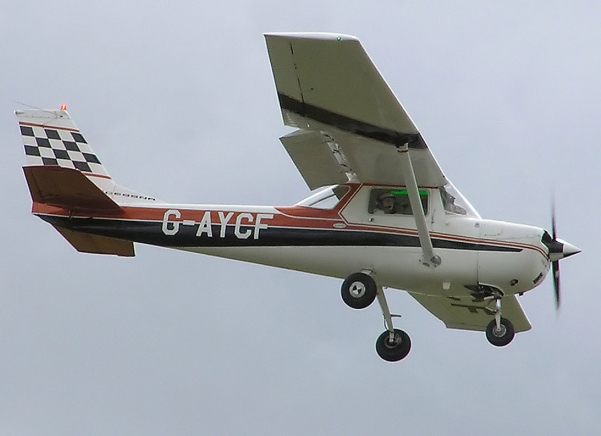
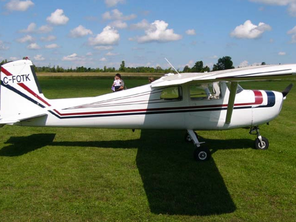

Cessna 150
The Cessna 150 is a two-seat tricycle gear general aviation airplane that was designed for flight training, touring and personal use. The Cessna 150 is the fifth most produced civilian plane ever, with 23,839 aircraft produced.The Cessna 150 was offered for sale in the 150 basic model, Commuter, Commuter II, Patroller and the aerobatic Aerobat models.
The Cessna 150 is simple, robust, and easy to fly. For these reasons it has become one of the world's most popular basic trainers. Cockpit visibility is generally good other than directly above the aircraft, where the view is blocked by the wing. This obstruction is of particular concern when, as is the case with most high-wing aircraft, the inside-turn wing blocks vision in the direction of a turn. As a partial remedy to this some 150s, including all Aerobats, feature a pair of overhead skylights. Due to its light weight and light wing loading (10 lb/sq ft), the aircraft is sensitive to turbulence. Power-on and power-off stalls are easily controlled. Normal spin recovery techniques are highly effective.

